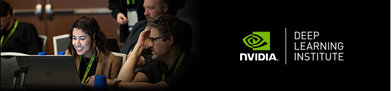
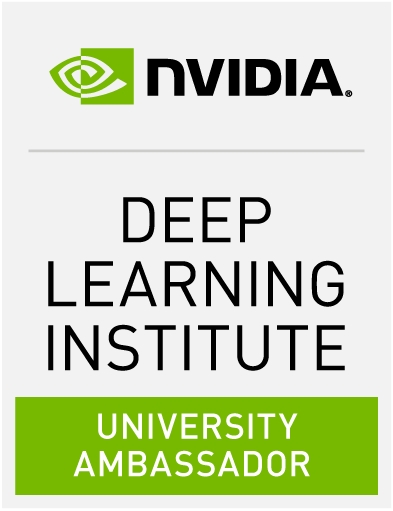

El NVIDIA
Deep Learning Institute es una organización que se
dedica a la formación en temas relacionados con GPU.
Ofrecen cursos totalmente prácticos con recursos en la nube,
siendo una buena forma de adentrarse en una nueva tecnología.
Además, la plataforma genera un certificado al
completar un ejercicio final propuesto.
En 2018 fui nombrado Embajador Universitario, y
colaboro con ellos para dar formación sobre GPU computing,
Deep Learning y Data Science. Si estás interesado en recibir
formación sobre alguno de los siguientes cursos, de los cuales
soy instructor certificado, puedes inscribirte en este formulario
o contactar conmigo:
Fundamentos de Computación Acelerada con CUDA C/C++
La plataforma de computación CUDA permite que
la aceleración de aplicaciones de solo CPU se ejecute en las
GPU de paralelismo masivo más rápidas del mundo. Experimenta
la aceleración de aplicaciones de C/C++. Para ello deberás:
- Acelerar las aplicaciones de solo CPU para ejecutar su
paralelismo latente en las GPU
- Utilizar técnicas esenciales de gestión de memoria de CUDA
para optimizar las aplicaciones aceleradas
- Exponer el potencial de concurrencia de las aplicaciones
aceleradas y aprovecharlo con flujos de CUDA
- Aprovechar la generación de perfiles visuales y de línea
de comandos como guía y comprobación de tu trabajo
Después de completaro, serás capaz de acelerar y
optimizar aplicaciones C/C++ usando las herramientas más
esenciales de CUDA y sus técnicas. Entenderás un estilo
iterativo de desarrollo con CUDA, y te permitirá desplegar
aplicaciones aceleradas de froma rápida. Un certificado
oficial emitido por la plataforma NVIDIA DLI será
emitido cuando se complete la tarea final. Sitio web
oficial: aquí
Fundamentos de Deep Learning
En este curso práctico dirigido por un
instructor, aprenderás los fundamentos del aprendizaje
profundo mediante el entrenamiento y el despliegue de redes
neuronales. Lo harás:
- Aprendiendo las técnicas fundamentales y herramientas
requeridas para entrenar un modelo de deep learning.
- Adquiriendo experiencia con tipos de datos y arquitecturas
de modelos comunes en deep learning.
- Mejorando datasets mediante aumentado de datos para
mejorar la precisión de los modelos.
- Aprovechando la transferencia de aprendizaje entre modelos
para obtener resultados eficientes con menos datos y
computación.
- Generando confianza para emprender tu propio proyecto con
un framework moderno para deep learning.
Un certificado oficial emitido
por la plataforma NVIDIA DLI será emitido cuando se complete
la tarea final. Sitio web oficial: aquí.
Este curso es el reemplazo del "Fundamentos de Deep Learning
para Computer Vision".
Fundamentos de Data Science Acelerado con RAPIDS
En este curso práctico, aprenderás a acelerar
en la GPU los flujos de trabajo de ciencia de datos, de
principio a fin:
- Usando cuDF, Dask y BlazingSQL para inyectar y manipular
conjuntos de datos masivos directamente en la GPU.
- Utilizando una amplia variedad de algoritmos de
aprendizaje automático acelerados en la GPU, incluyendo
XGBoost, cuGRAPH y varios algoritmos cuML para realizar
análisis de datos a escala masiva.
- Realizando múltiples tareas de análisis en varios
conjuntos de datos masivos en un esfuerzo por evitar un
brote epidémico simulado que afectara a toda la población
del Reino Unido.
Un certificado oficial emitido
por la plataforma NVIDIA DLI será emitido cuando se complete
la tarea final. Sitio web oficial: aquí.